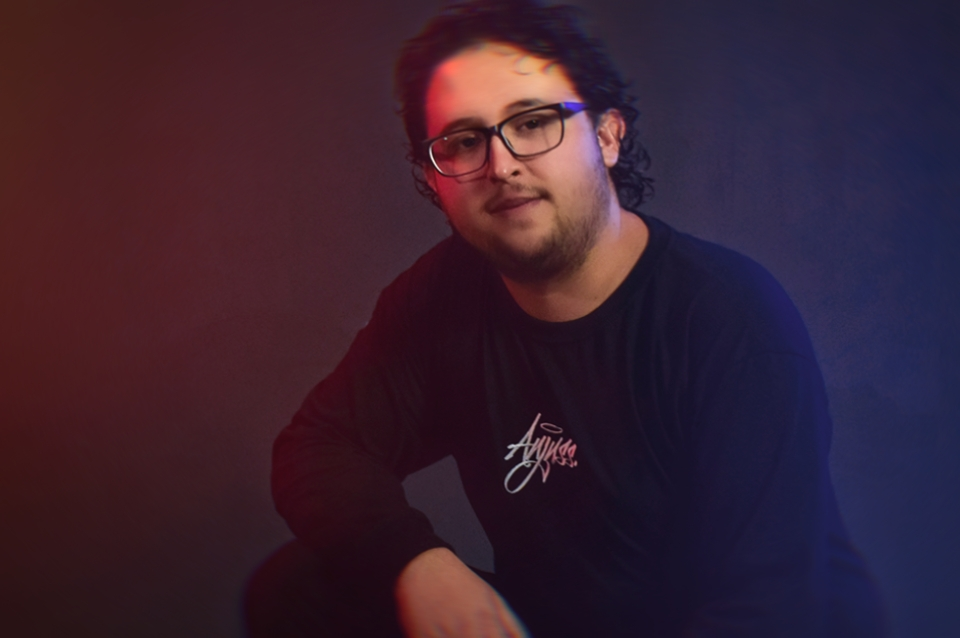
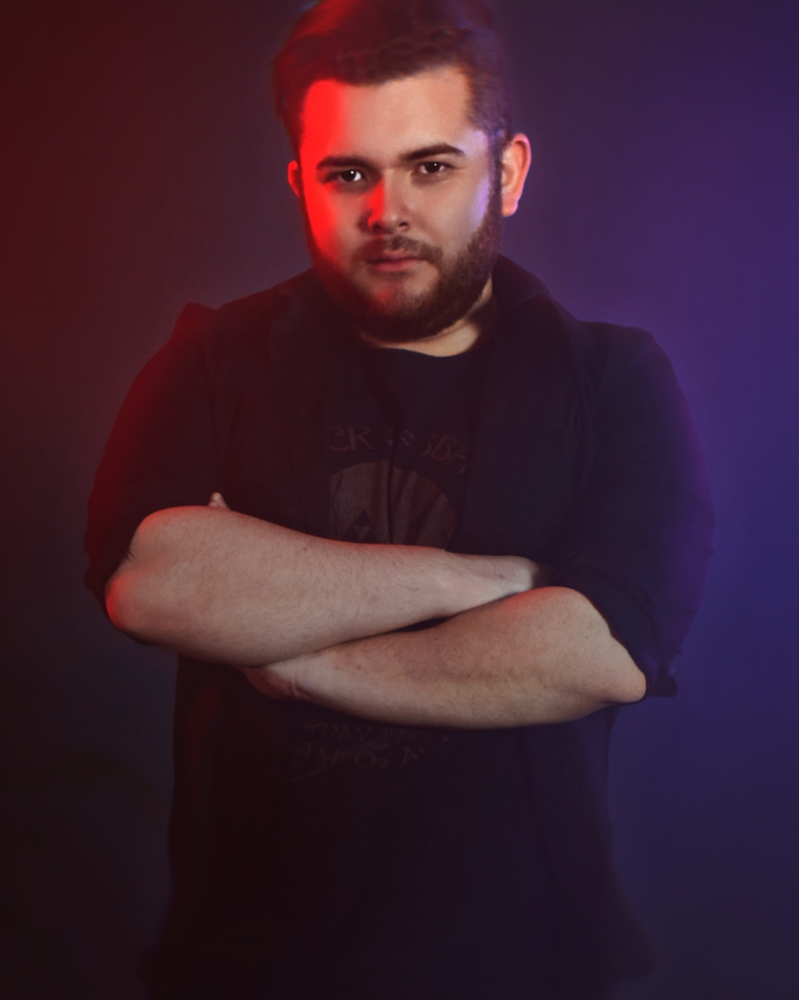
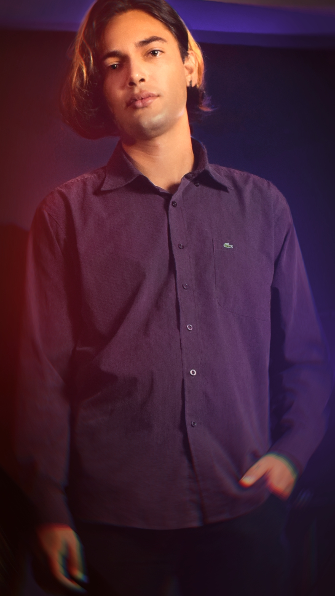

Quem é a Effect Radio?
Effect Radio é uma banda com influência em várias vertentes do Rock, como Grunge, Heavy Metal, Hard Rock e Rock Progressivo, fundada em Araucária/PR em 2019. A banda fez diversas apresentações durante o ano de sua fundação, em 2020 com a chegada da pandemia, utilizou da quarentena para preparar o lançamento de seu primeiro single, "Monster", que chegou ao YouTube com clipe produzido pela Mirante Music e em todas as plataformas de Streaming. Gravado de forma independente no estúdio Bunker Cultural, "Monster"é a grande aposta da banda.

Bruno Schafer
Baterista e fundador da banda, tem como influência bateristas como xxxxxxx, xxxxxxx, xxxxx e xxxxxxx.
 /bruno_schafer
/bruno_schafer

Luan Ribeiro
Comandando o grave baixo de nossa banda, Luan! Influenciado por baixistas como Flea, Felipe Andreoli e xxxxxx.
/luan_padilhaw

Thayghethy Souza
Nos vocais, Thayghethy. Com influência de vocalistas como Andre Matos, Edu Falaschi, Fabio Lione, Dio e Axl Rose, trás vários referências e inspirações em nossas músicas.
/thayghethy_souza

Eros Ferreira
Na guitarra, Eros! Com uma grande bagagem e experiência na cena underground, é o mais novo integrante da banda, tendo como influência guitarristas como Tony Iommi, Randy Rhoades e xxxxxx.
/error_ferr